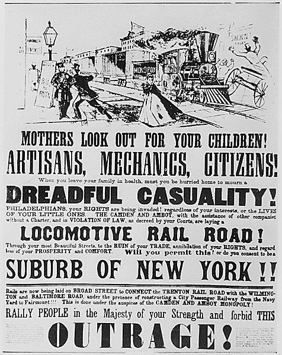

| Field | Detail |
| TOC Fit | Chapter 8 · Essay prompt 8.1 (Revolution or Evolution?); Essay prompt 8.2 (Who Built the Infrastructure?) |
| Why Here | A poster urges Philadelphians to stop a railroad company from laying tracks through their streets, appealing to their rights, the law, and the safety of their children. Students can weigh it as evidence of popular resistance to private transportation corporations and of fears about what the new technology would do to city life. |
| Treatment | Public-domain image; printed text transcribed in part from the National Archives description |
In the 1830s railroad companies sought to bring their lines into the hearts of American cities, often running locomotives along public streets. In Philadelphia, residents and rival business interests repeatedly opposed plans by the Camden and Amboy Railroad and allied companies, which linked Philadelphia to New York by way of New Jersey, to extend tracks through city neighborhoods. Opponents argued that steam locomotives were dangerous to pedestrians and horses, that they would damage property and street trade, and that the companies were acting beyond their charters. Similar fights in other cities led to ordinances requiring trains to stop at city limits or to be drawn by horses inside them. Editorial note. The image is a photograph of the poster in the National Archives (Records of the Bureau of Public Roads, Record Group 30, Historical Photograph Files; NAID 513347), described by the Archives as in the public domain. The Norton Online Reader image could not be consulted for this reader, so the exact print Norton uses could not be confirmed. Only the poster’s opening lines are transcribed here, from the National Archives/DocsTeach description; the rest of the printed text (including the warnings to mothers often quoted from it) can be read in the image. CAUTION: The National Archives copy is a photograph filed among Bureau of Public Roads historical photographs, not the original broadside, and no publisher or author is recorded; treat the poster as anonymous propaganda whose sponsors (rival transport interests or neighborhood residents) are unknown. |
|
 |
|
UNIT 3 · AN EXPANDING NATION | HISTORY B17A | DANIEL GARZA, M.A.
|